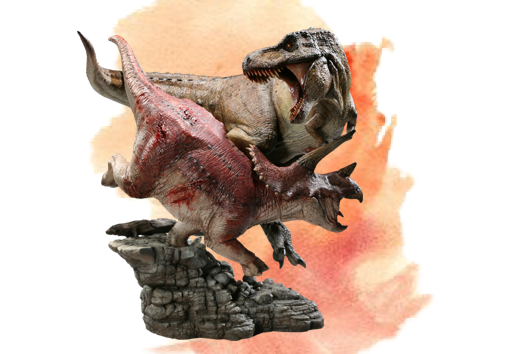

Diet
The T Rex was a carnovoire and some paleontologists believe they were scavengers rather than hunters due to their small arms, small eyes and small gait. However, other paleontologists think they were hunters rather than scavengers. Although it's up for debate whether they were scavengers or hunters, one thing is well known, they were carnovoirs (meat eaters). Their most favorite meal was Triceratops and often time their bones are found in fossilized dung of a T Rex.